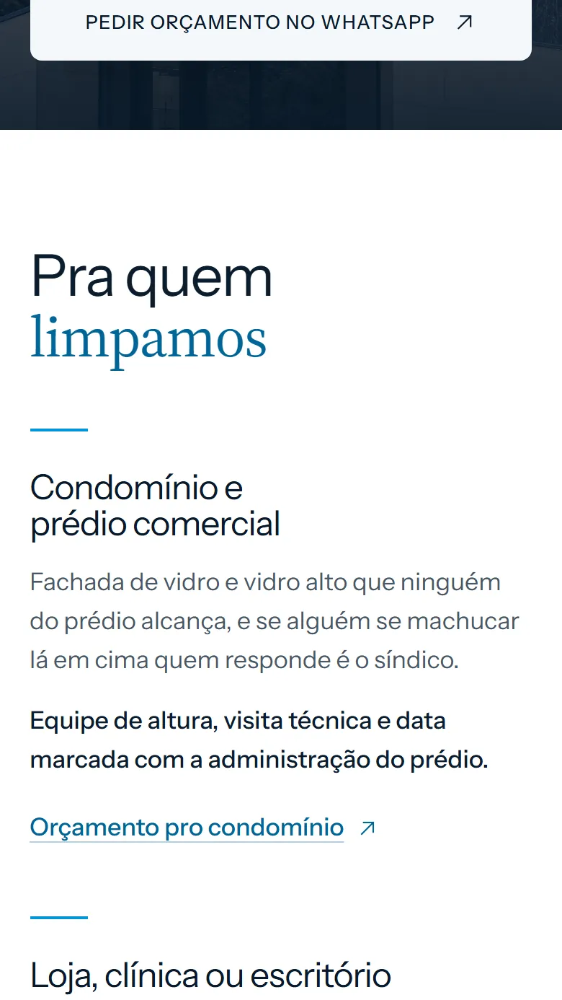
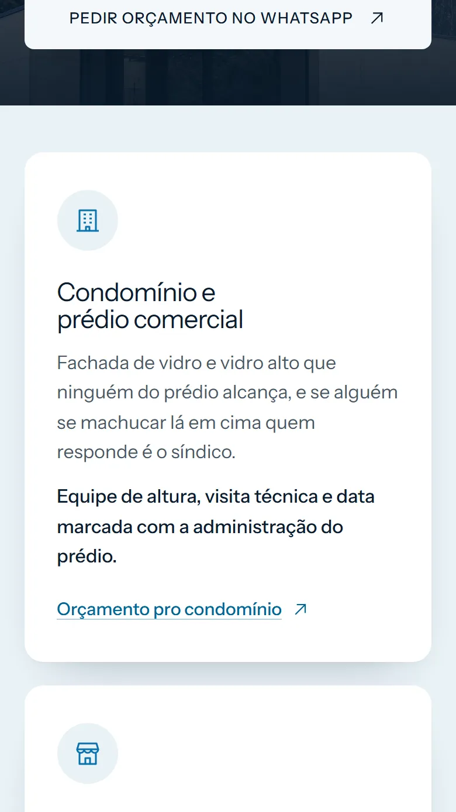
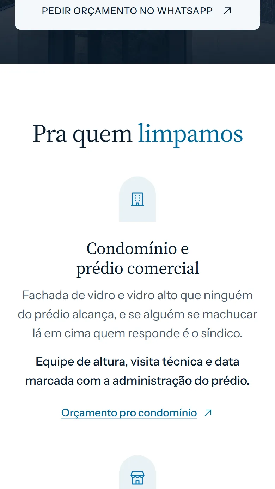

Abram os três, no celular também
Desçam um pouco depois da foto da entrada: é ali que eles ficam diferentes.

AClaro
Fundo branco, fotos grandes e bastante espaço. Pouca coisa por tela.

BCartões
Cada coisa no seu quadro, com ícones. O jeito das referências que vocês mandaram.

CArcos
As fotos em formato de janela, títulos centralizados. Mais delicado.
Os três usam as cores de vocês: o azul-marinho aparece só nos detalhes, e o azul da logo nos botões.
Agora escolham parte por parte
Pode misturar: as cores de um com as fotos de outro, por exemplo. O botão no fim já manda tudo pelo WhatsApp.